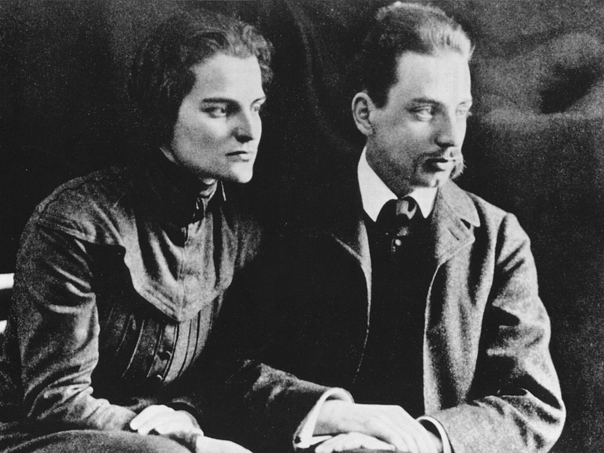

Rilke na starej fotografii
Rilke i Clara Westhoff 1906
Rilke i Clara Westhoff latem roku 1906. Razem z córką Ruth wyruszą wkrótce do Flandrii. Zwiedzą m.in. Furnes, Ypres, Brugię i Gandawę.
Pod wpływem łagodnego nacisku Clary — czytamy w biografii poety Dźwięczące szkło — Rainer zaczął obmyślać plany ich wspólnego pobytu, być może w sierpniu, gdzieś w nadmorskiej okolicy — w Bretanii, dokąd właśnie udała się Mathilde Vollmoeller, lub też w Belgii, o której tak wiele opowiadał mu Verhaeren. Karl von der Heydt okazał wspaniałomyślność, nie tylko zapraszając oboje do swej posiadłości w Godesbergu na ostatnie dwa tygodnie sierpnia, lecz również przesyłając im pieniądze na podróż. Rilke zdecydował ostatecznie udać się do Belgii, tak przy tym planując termin wyjazdu, by w Furnes zobaczyć tradycyjną doroczną procesję pokutników, odbywającą się w ostatnią niedzielę lipca, a także towarzyszący tej uroczystości kermesse. Oczekując w Furnes na przyjazd Clary, Rainer skreślił list do Dory Herxheimer, w którym wyznał, iż nie jest to owo ciche, spokojne miasteczko, jakie spodziewał się zastać. Czuł się tak, jak gdyby znalazł się w samym środku jednego z obrazów pędzla flamandzkiego malarza Teniersa. „Teraz już wiem, jak one dźwięczą”, wypełnione bezustannym biciem dzwonów oraz jarmarcznym zgiełkiem. Ogromny rynek miejski „napełniała wrzawa, na każdym kroku pełno bud, huśtawek i kręcących się w szaleńczym pędzie karuzeli, a do tego gęsta, zbita ciżba ludzka, przepychająca się aż do późnej nocy to tu, to tam, pośród unoszących się wszędzie zapachów piwa i pierników oraz tumanów kurzu”.
Clara z utęsknieniem oczekiwała tego spotkania. Co prawda niezmiennie wyznawała te same co mąż poglądy — jej praca, w nie mniejszym stopniu niż jego, wymagała od niej samotności — niemniej w rzeczywistości pragnęła znów być u jego boku. Żywiła też nadzieję, iż — jak pisała do Georga Brandesa tuż przed swym wyjazdem — po letnich wakacjach jej pragnienie w jakiś sposób stanie się rzeczywistością. „Worpswede jest zbyt oddalone od centrów życia intelektualnego, by urządzać tam miejsce pracy, ja zaś wyczerpałam jego możliwości, jeśli idzie o modele”. Spotkanie z rodziną było dla Rainera bardziej obowiązkiem aniżeli przyjemnością. Oostduinkerke wydało mu się najspokojniejszym spośród uzdrowisk, jakie odwiedził, zanim 1 lipca do Furnes przyjechały Clara i Ruth, toteż tam właśnie spędzili wspólnie dziesięć dni. Rilkemu towarzyszyły niemiłe uczucia, kiedy obserwował życie dziecka, pogrążonego we własnym świecie, które wydawało mu się „niczym inne życie, prawie przeczące naszemu, nieustannie je zużywając”. Na domiar złego atmosfera panująca w owym przepełnionym nadmorskim kurorcie była dlań wręcz odpychająca; wszystko nastawione było na próżnowanie, „ani śladu prawdziwego życia, prawdziwego istnienia, jak gdyby człowiek znalazł się w jakimś niemożliwym świecie”.
Z uczuciem ulgi wyruszyli w dalszą drogę do posiadłości von der Heydtów w Godesbergu, zatrzymując się w Brugii i Gandawie. Brugia, mimo tłumu turystów na ulicach, dzięki swym kościołom i muzeom wydała mu się miastem „niezrównanie pięknym”. Wszędzie towarzyszyła im mała Ruth; w kościołach prosiła o mały klęcznik, by mogła się modlić w ciszy i spokoju, w muzeach zaś bawiła się na podłodze muszelkami, podczas gdy rodzice podziwiali malowidła. Czekało ich także niespodziewane spotkanie — otóż kiedy przemierzali główną nawę katedry, Rainer szepnął nagle: „Tam stoi Rodin”. Mistrz, spostrzegłszy ich, dał wyraz swej radości, objął Ruth i ucałował ją w czoło. „Ma Pani tu najwspanialszy model, jaki mogłaby sobie Pani wymarzyć” — rzekł do Clary — „model dla rzeźby anioła”. Rozmowa była wprawdzie krótka, lecz pozwalała żywić nadzieję na pojednanie.
Niepewność jutra zadręczała ich przez pozostałe dni lata. Chociaż Alice Faehndrich ponownie zaprosiła ich na okres września do Friedelhausen, nie wiedzieli, co mają dalej począć. Mimo wielkoduszności swych gospodarzy w Friedelhausen, a także von der Heydtów w Godesbergu, u których gościli w sierpniu, mimo wygody życia w owych patrycjuszowskich domach, jak również nowych wrażeń, jakie wynieśli z podróży do Belgii i Hesji, Rainera dręczyła później myśl, iż źle postąpił, pozwalając się oderwać od swej pracy. Ponieważ nie potrafił żyć oszczędnie, podczas owych podróży wydali więcej, niż nakazywał rozsądek. Stąd też z utęsknieniem wyczekiwany powrót do Paryża wydawał się obecnie niemożliwy ze względów finansowych. Rainer miał pewność co do dwu rzeczy: musiał pozostać sam, by móc dalej pracować — nie mogło być mowy o odtworzeniu warunków, w jakich przebywali wspólnie z Clarą w Rzymie; na domiar czuł, iż miejsce jego pobytu musi znajdować się poza obszarem Niemiec. Clara zmuszona była na to przystać; w trakcie pobytu na zamku Friedelhausen wspólnie rozważali, co powinni uczynić. Rainer, jak zawsze, długo się wahał — jego gospodarze musieli okazywać mu zaiste anielską cierpliwość — jednakże źródłem owego niezdecydowania nie była już bynajmniej wewnętrzna niepewność. Poeta był bowiem przekonany, że teraz, po doświadczeniach paryskich, musi stworzyć sobie odpowiednie warunki, by znów pogrążyć się w pracy.
Fragment biografii Rainera Marii Rilkego Dźwięczące szkło D. Pratera w przekładzie autora